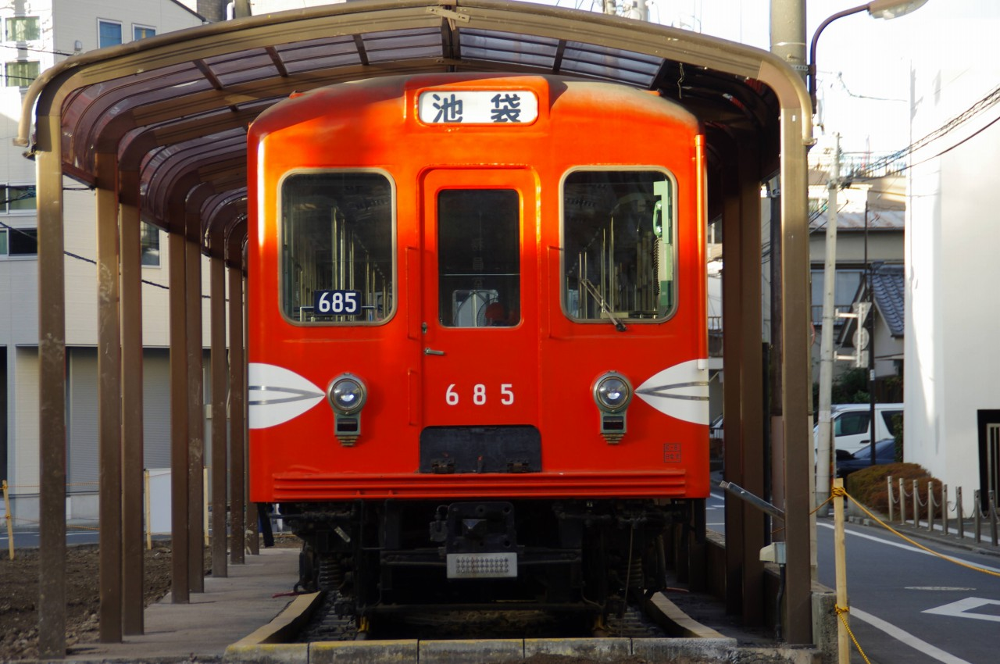
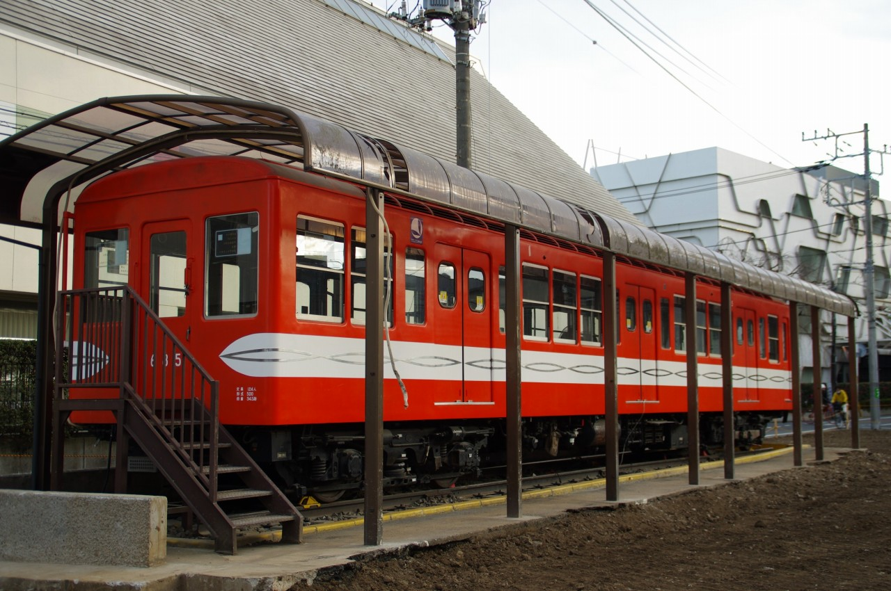
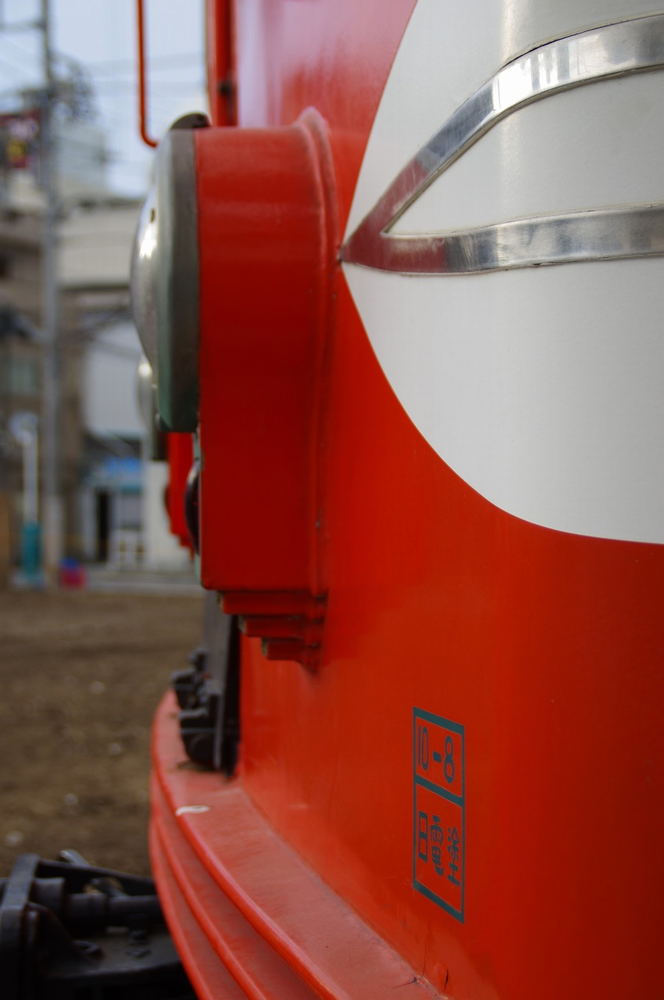
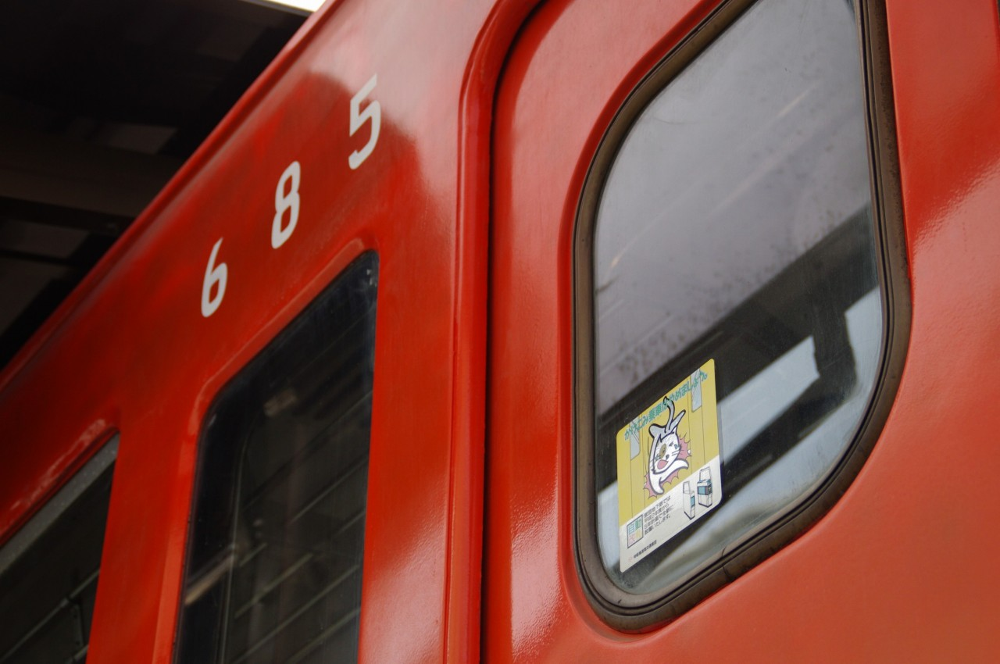
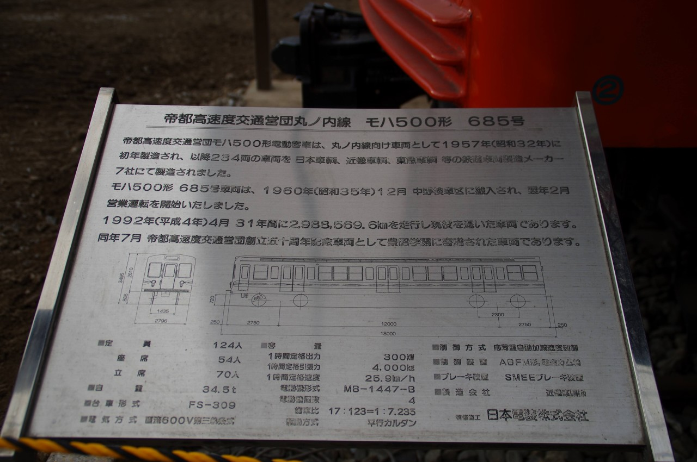

Tweet 東京交通短期大学 営団地下鉄500形685号 2020年12月訪問。500形は1957年に登場し、営団時代の丸ノ内線で活躍していた。400形までは運転台が両側に設けられていたが、本形式より片側にのみ設置されている。以前は建物に囲まれており見にくい状況であったが、旧校舎が取り壊されたことで全方位から撮影が可能な状態になっていた。  400形には設置されていた方向幕横のライトが廃止されている。  連結面側。やはり一昔前の車両は地下鉄でも窓が多い。   営団時代のドアステッカーも残っていた。懐かしい。  Tweet